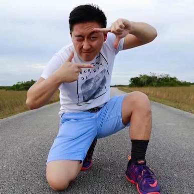
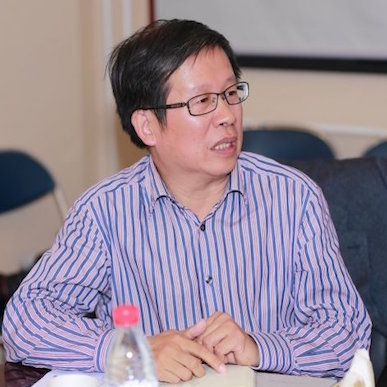

Course Name:EPS744 Student Diversity
Essay Name:The Involvement of Asian American Undergraduate Students

Compared to other minority racial and ethnic groups, Asian Americans have large populations in higher education nationally. A large number of Asian American students pursue college degrees and enroll in American colleges and universities. Between 1999 and 2009, the number of Asian American undergraduate and graduate students enrolled in institutions of higher education increased by about 430,000 students, from approximately 0.91 million to about 1.34 million. Asian American students are commonly depicted as academic super- stars or model minorities. According to the model-minority stereotype, Asian Americans are successful in school because they work hard and come from cultures that believe in the value of education (Lee, 1994).
However, due to the model minority assumption, many federal agencies exclude Asian Americans from opportunities, resources, and discussions (Ching & Agbayani, 2012). Moreover, Asian American students are ignored by postsecondary educators who assume that they do not need support (Museus & Park, 2012). In a word, Asian American students are a misunderstood population. The absence of an understanding of Asian American student in higher education should be focused by the federal government and other educational organizations. For example, much of the research on college student suggests that there is a positive relationship between students who are involved in the campus environment and their success in their college life. However, most research would target at African American, Hispanic American, fraternity and sorority, or first generation students. There is still a lack of research on Asian American students.
The purpose of this mini-study is to explorer the factors that are associated with college involvements for Asian American students. Specifically it will examine the factors that enhance or impede involvement for this group. Background information on Asian American students will be presented first. Then it will be followed by a review of the research on involvement of Asian American undergraduates. Next the method will be presented with a description of the two students that were interviewed followed by a description of major findings from the interviews related to the research, and finally a discussion of the implications.
Course Name:EPS742 History of American Higher Education
Essay Name:Comparison of the United States and China’s Systems of Higher Education
China, as one of the four ancient civilizations, has a long tradition in higher education. Ancient Chinese civilization originated in the second millennium B.C and higher education has been developing for more than 4,000 years. In contrast, the United States, although it has been in existence for only about 200 years, has quickly become one of the most advanced countries in the world. It has not only advanced in economic development, but also in the equality of its education.
The different cultural backgrounds of the two countries have resulted in different education systems. From the earliest times, Chinese education emphasized the importance of civic morality, and students were required to respect knowledge and authority (Domonkos, 1989). On the contrary, the United States sees more value in personality, so educators pay more attention to cultivating students’ ability to query and think.
In the 1960s, Chinese higher education experienced a difficult time in which the anti-intellectualism prevailed throughout the country. During the 1990s, however, the Chinese government reflected on its mistakes and realized the importance of education, so they initiated a series of reforms of the educational system. Chinese higher education began to move toward mass education. As a result, the number of institutions increased, as did student enrollments.
As for the United States, it is no exaggeration to say its higher education started at the same time that the county was established. After 200 years, the mature U.S. education system consisted of comprehensive institutions, research universities, community colleges, and liberal arts colleges (Cohen & Kisker, 2010).
The purpose of this paper is to compare and contrast the higher education systems of the United States and China. A comparison of some key aspects of the systems (students, admissions/access and governance) will be presented, as will an analysis of the similarities and differences in the two systems. Some strengths and weaknesses of the two systems will then be discussed, which will provide lessons for the future of higher education.
Course Name:EPS745 Organization and Administration of Higher Education II:Governance,Leadership, and Finance
Essay Name:A Portrait of Today’s Associate Dean at Zhejiang Gongshang University

No one would be unfamiliar with the word leadership. No matter in politics, management, education, economics, or other fields, people talks much about leadership. As for higher education, leadership is also an important topic. Serving as an administration in a college or university today has never been an easy job. The book learning to lead lists some current issues facing higher education: governance, finance, access, diversity, federal and state relations, planning, content, delivery, assessment, technology, and relationships with schools and schooling (Davis, 2003, p. xvi). What is more, leadership itself also faces with challenges. Perhaps the greatest challenge is to create a culture of leadership. What will the leaders do? What roles will the leaders play?
The purpose of this paper is to create a portrait of Ziliang Wang’s leadership role in his position as Associate Dean of School of Public Administration. First, his administrative leadership will be discussed. Next, his job description will be compared with job descriptions with similar titles. Then, there will be a discussion of the ideal leader and the ideal job posting for that position. Finally, there will be a conclusion and a personal reflection about leadership in higher education.
Ziliang Wang was born in Taizhou, Zhejiang Province in 1958. He was accepted by Hangzhou University (which was afterwards incorporated into Zhejiang University) and majored in Chinese language and literature in 1977. After graduation, he became a government official in Taizhou City since 1982. Since 1990, he worked in Taizhou Daily Newspaper and became the chief editor since 1995. In 1997, he was appointed to be the director of Provincial general office of Zhejiang province. He joined GEELY Auto and became Vice CEO and spokesman since 2005. During his time in GEELY, this company acquiring VOLVO successfully. He is a professor and the vice dean of School of Public Administration, Zhejiang Gongshang University at present. His research directions include leadership, public policy, comparative political system, and emergency management. He even published a textbook of leadership in 2015.